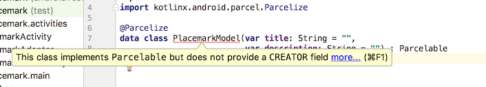

Objectives
Exercise Solutions
Exercise 1
Incorporate new 'Cancel' action into PlacemarkActivity. This should return to PlacemarkList without adding a new Placemark, Use the RESULT_CANCELED return code.
strings.xml
...
<string name="menu_cancelPlacemark">Cancel</string>
...menu_placemark.xml
<?xml version="1.0" encoding="utf-8"?>
<menu xmlns:android="http://schemas.android.com/apk/res/android"
xmlns:app="http://schemas.android.com/apk/res-auto">
<item
android:id="@+id/item_cancel"
android:title="@string/menu_cancelPlacemark"
app:showAsAction="always"/>
</menu>PlacemarkActivity
...
override fun onCreate(savedInstanceState: Bundle?) {
...
toolbarAdd.title = title
setSupportActionBar(toolbarAdd)
...
}
}
...
override fun onCreateOptionsMenu(menu: Menu?): Boolean {
menuInflater.inflate(R.menu.menu_placemark, menu)
return super.onCreateOptionsMenu(menu)
}
override fun onOptionsItemSelected(item: MenuItem?): Boolean {
when (item?.itemId) {
R.id.item_cancel -> {
setResult(RESULT_CANCELED)
finish()
}
}
return super.onOptionsItemSelected(item)
}
...Exercise 2 & 3
Introduce the following interface into the models package:
PlacemarkStore
package org.wit.placemark.model
interface PlacemarkStore {
fun findAll(): List<PlacemarkModel>
fun create(placemark: PlacemarkModel)
}and implement this interface in a class called PlacemarkMemStore
PlacemarkMemStore
package org.wit.placemark.models
class PlacemarkMemStore : PlacemarkStore {
val placemarks = ArrayList<PlacemarkModel>()
override fun findAll(): List<PlacemarkModel> {
return placemarks
}
override fun create(placemark: PlacemarkModel) {
placemarks.add(placemark)
}
}Rework all classes to use the above class:
MainApp
// val placemarks = ArrayList<PlacemarkModel>()
val placemarks = PlacemarkMemStore()PlacemarkListActivity
// recyclerView.adapter = PlacemarkAdapter(app.placemarks)
recyclerView.adapter = PlacemarkAdapter(app.placemarks.findAll())PlacemarkActivity
// app.placemarks.add(placemark.copy())
app.placemarks.create(placemark.copy())
...
// app.placemarks.forEach { info("add Button Pressed: ${it}") }
app.placemarks.findAll().forEach{ info("add Button Pressed: ${it}") }
...Exercise 4
Introduce a new method in PlacemarkMemStore which will log all placemarks. Make this an internal method (not in the interface). Call it whenever a new placemark is added.
PlacemarkMemStore
...
override fun create(placemark: PlacemarkModel) {
placemarks.add(placemark)
logAll()
}
internal fun logAll() {
placemarks.forEach{ info("${it}") }
}
...PlacemarkActivity
// info("add Button Pressed: $placemarkTitle")
// app.placemarks.findAll().forEach{ info("add Button Pressed: ${it}") }Refactor PlacemarkAdapter
As the PlacemarkAdapter becomes more capable - it might be useful to refactor it into its own file:
PlacemarkAdapter
package org.wit.placemark.activities
import android.support.v7.widget.RecyclerView
import android.view.LayoutInflater
import android.view.View
import android.view.ViewGroup
import kotlinx.android.synthetic.main.card_placemark.view.*
import org.wit.placemark.R
import org.wit.placemark.models.PlacemarkModel
class PlacemarkAdapter constructor(private var placemarks: List<PlacemarkModel>) : RecyclerView.Adapter<PlacemarkAdapter.MainHolder>() {
override fun onCreateViewHolder(parent: ViewGroup?, viewType: Int): MainHolder {
return MainHolder(LayoutInflater.from(parent?.context).inflate(R.layout.card_placemark, parent, false))
}
override fun onBindViewHolder(holder: MainHolder, position: Int) {
val placemark = placemarks[holder.adapterPosition]
holder.bind(placemark)
}
override fun getItemCount(): Int = placemarks.size
class MainHolder constructor(itemView: View) : RecyclerView.ViewHolder(itemView) {
fun bind(placemark: PlacemarkModel) {
itemView.placemarkTitle.text = placemark.title
itemView.description.text = placemark.description
}
}
}When you remove this class from PlacemarkListActivity - be sure to remove all unused imports (these are greyed out when unused)
Rebuld and run the app now to verify that these changes have been engaged correctly.
PlacemarkListner
In PlacemarkAdapter, introduce this new interface:
PlacemarkAdapter
interface PlacemarkListener {
fun onPlacemarkClick(placemark: PlacemarkModel)
}Place it just before the PlacemarkAdapter class (outside the class).
This new interface will represent click events on the placemark Card, and allow us to abstract the response to this event.
Here is a revised version of the Adapter - which accepts and installs an event handler based on this interface:
class PlacemarkAdapter constructor(private var placemarks: List<PlacemarkModel>,
private val listener: PlacemarkListener) : RecyclerView.Adapter<PlacemarkAdapter.MainHolder>() {
override fun onCreateViewHolder(parent: ViewGroup?, viewType: Int): MainHolder {
return MainHolder(LayoutInflater.from(parent?.context).inflate(R.layout.card_placemark, parent, false))
}
override fun onBindViewHolder(holder: MainHolder, position: Int) {
val placemark = placemarks[holder.adapterPosition]
holder.bind(placemark, listener)
}
override fun getItemCount(): Int = placemarks.size
class MainHolder constructor(itemView: View) : RecyclerView.ViewHolder(itemView) {
fun bind(placemark: PlacemarkModel, listener : PlacemarkListener) {
itemView.placemarkTitle.text = placemark.title
itemView.description.text = placemark.description
itemView.setOnClickListener { listener.onPlacemarkClick(placemark) }
}
}
}Look carefully at the very last line of the bind function above:
itemView.setOnClickListener { listener.onPlacemarkClick(placemark) }Can you figure our that is going on here?
Perhaps if we now use this capability in PlacemarkListActivity it will become clearer.
PlacemarkListActivity
First, declare that we will implement the new interface:
class PlacemarkListActivity : AppCompatActivity(), PlacemarkListener {... then the actual implementation:
override fun onPlacemarkClick(placemark: PlacemarkModel) {
startActivityForResult(intentFor<PlacemarkActivity>(), AppCompatActivity.RESULT_OK)
}Finally, in onCreate, change the way we create the adapter:
recyclerView.adapter = PlacemarkAdapter(app.placemarks.findAll(), this)If you run the app now - selecting a placemark from the list will start the PlacemarkActivity
However, the Placemark we select will not appear in the PlacemarkActivity view. We will fix this in the next steps.
Parcelable
We will switch on some additional Kotlin goodness - which will significantly simplify the next set of features.
build.gradle
Before the dependencies:
androidExtensions {
experimental = true
}These experimental features are discussed here:
They are now without some issues - but quite usable.
This is a revised version of the PlacemarkModel class:
package org.wit.placemark.models
import android.os.Parcelable
import kotlinx.android.parcel.Parcelize
@Parcelize
data class PlacemarkModel(var title: String = "",
var description: String = "") : ParcelableIt implements a parcelize capability. This is discussed in detail here:
...but this was written without using the new feature we have just enabled, which dramatically reduces the boilerplate even further. Our approach is discussed here:
(towards the end)
Currently, the Studio may show an error:

Even when you resync gradle - a residue error may still be shown:

You CAN safely ignore this - as the facility will in fact work.
StartActivityWithData
We can now pass the selected placemark when we start PlacemarkActivity:
Change the current onPlacemarkClick implementation:
PlacemarkListActivity
override fun onPlacemarkClick(placemark: PlacemarkModel) {
startActivityForResult(intentFor<PlacemarkActivity>(), AppCompatActivity.RESULT_OK)
}to this:
override fun onPlacemarkClick(placemark: PlacemarkModel) {
startActivityForResult(intentFor<PlacemarkActivity>().putExtra("placemark_edit", placemark), AppCompatActivity.RESULT_OK)
}Notice we are passing the selected placemark to the activity - this is enabled via the parcelable mechanism we have just turned on.
Now, in PlacemarkActivity, we can retrieve the placemark in onCreate()
override fun onCreate(savedInstanceState: Bundle?) {
...
if (intent.hasExtra("placemark_edit")) {
placemark = intent.extras.getParcelable<PlacemarkModel>("placemark_edit")
placemarkTitle.setText(placemark.title)
description.setText(placemark.description)
}
...
}We read back the placemark, and place its field into the view controls.
Run the app now - and verify that if you select a placemark - you will be taken to the PlacemakrActivity containing its values.
Ids
Currently, we 'edit' a placemark, make a change - then it will create a new placemark. This clearly is not the appropriate behavior. We should update the placemark we have been passed.
To do this, we need a unique way of identifying placemarks - this is usually via an id. This is the current model:
@Parcelize
data class PlacemarkModel(var title: String = "",
var description: String = "") : ParcelableThis is a revised version to include an ID:
@Parcelize
data class PlacemarkModel(var id: Long = 0,
var title: String = "",
var description: String = "") : ParcelableWe can now introduce a new method in PlacemarkStore:
PlacemarkStore
...
fun update(placemark: PlacemarkModel)
...... and this is a revised PlacemarkMemStore implementation:
package org.wit.placemark.models
import org.jetbrains.anko.AnkoLogger
import org.jetbrains.anko.info
var lastId = 0L
internal fun getId(): Long {
return lastId++
}
class PlacemarkMemStore : PlacemarkStore, AnkoLogger {
val placemarks = ArrayList<PlacemarkModel>()
override fun findAll(): List<PlacemarkModel> {
return placemarks
}
override fun create(placemark: PlacemarkModel) {
placemark.id = getId()
placemarks.add(placemark)
logAll()
}
override fun update(placemark: PlacemarkModel) {
var foundPlacemark: PlacemarkModel? = placemarks.find { p -> p.id == placemark.id }
if (foundPlacemark != null) {
foundPlacemark.title = placemark.title
foundPlacemark.description = placemark.description
}
}
internal fun logAll() {
placemarks.forEach { info("${it}") }
}
}Notice how we are generating a new ID when we create placemarks.
These features will enable us to implement a placemark edit behaviour (see Exercises)
Solution
Placemark application so far:
Exercise 1
In PlacemarkActivity - we have the following hard coded strings:
PlacemarkActivity
...
btnAdd.setText("Save Placemark")
...
toast("Please Enter a title")These strings should be in the strings.xml resource file. Move them in there, and figure out how to load the strings in PlacemarkActivity.
For guidance, see:
- https://developer.android.com/guide/topics/resources/string-resource.html
- https://stackoverflow.com/questions/44871481/how-can-i-access-values-from-strings-xml-in-kotlin-android
Exercise 2
When you select a placemark from PlacemarkList Activity - it presents the activity in the PlacemarkActivity. If you edit the activity, and press 'Create' - a new activity is created and appended to the list.
Change this behaviour along the following lines:
- When PlacemarkActivity is opened in this way - the button label 'add placemark' should be named 'save placemark'. Make sure you are creating the string resources in strings.xml
- Pressing the button should update the existing placemark with the newly entered values, not create new one.
We have new features in PlacemarkStore to enable you to implement this (the update method)
If you complete the implementation, you will notice that even if you update a Placemark's contents, the new contents will not be displayed in PlacemarkList. However, if you consult the logs you may be able to see if the values are actually changed.
Exercise 3 below will modify PlacemarkList to always to show the latest placemark store.
Exercise 3
In order to update the placemarklist correctly, we need to change how we launch and receive results from PlacemarkActivity. Here is a revised implementation of three key methods:
PlacemarkListActivity
override fun onPlacemarkClick(placemark: PlacemarkModel) {
startActivityForResult(intentFor<PlacemarkActivity>().putExtra("placemark_edit", placemark), 200)
}
override fun onOptionsItemSelected(item: MenuItem?): Boolean {
when (item?.itemId) {
R.id.item_add -> startActivityForResult<PlacemarkActivity>(200)
}
return super.onOptionsItemSelected(item)
}
override fun onActivityResult(requestCode: Int, resultCode: Int, data: Intent?) {
recyclerView.adapter.notifyDataSetChanged()
super.onActivityResult(requestCode, resultCode, data)
}Look carefully at the changes we have introduced - in particular notice the extra values we pass to startActivity.
If you solved Exercise 2 - then the above implementation should now correctly update the list.